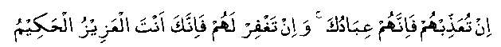
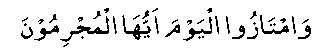

Once Nabi (Sallallahu Alayhi Wasallam) kept weeping through the whole night, again and again repeating the following verse:

"If You punish them, they are Your slaves; and if You forgive them, You only are the Mighty, the Wise." (S5 : V118)
It is said about Imam Abu Hanifah (Rahmatullah alaih) that he also once wept the whole night, reciting the following verse of the Qur-aan in Tahajjud:

"Separate yourselves on this day, O you guilty." (S35 : V58)
This verse means that on the Day of Qiyaamah, the guilty will be asked to separate themselves from the good, and will not be allowed to mix with them as they were doing in the worldly life. Why should not the people with fear of Allah Ta’ala in their hearts weep in anxiety regarding which class they will belong to on that Day?